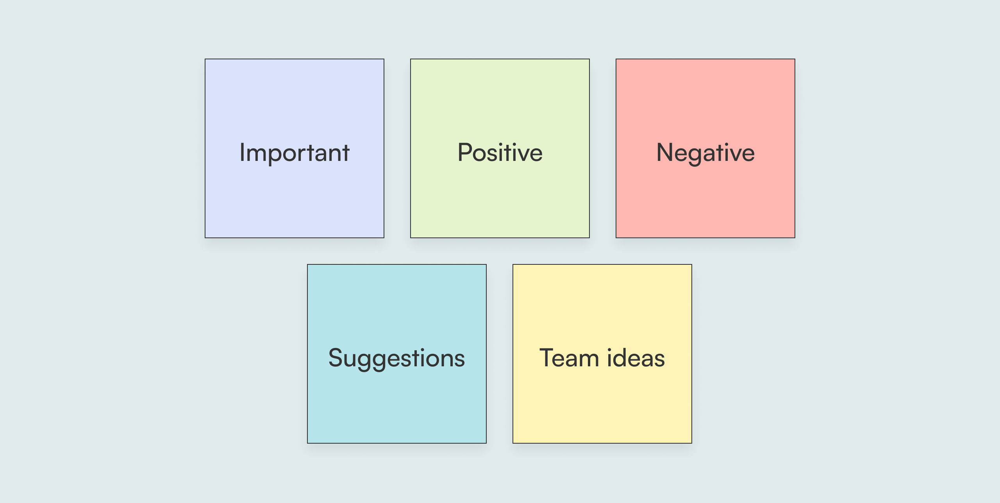

Objective
We conducted usability Testing with existing clients to gain insight into areas of improvement, and ensure that our approach offered a positive user experience. The testing was performed to support phase 1, and understand client experiences around requesting higher limits, clarity of content and inform future work on phase 2.
Process
The Design Researcher prepared a research outline, and a number of questions to walk the client through the flow and prompt further thinking. We had eight 30-minute sessions, and I was fortunate to have the opportunity to act as an observer, note-taker, and even as a moderater! We colour-coded our notes to organize them into 5 categories: important, positive, negative, suggestions, and team ideas.

Key Insights
From the usability testing sessions, we gained a number of insights that helped us narrow in on our direction. These were some of the major ones, and "How Might We?" questions to consider.